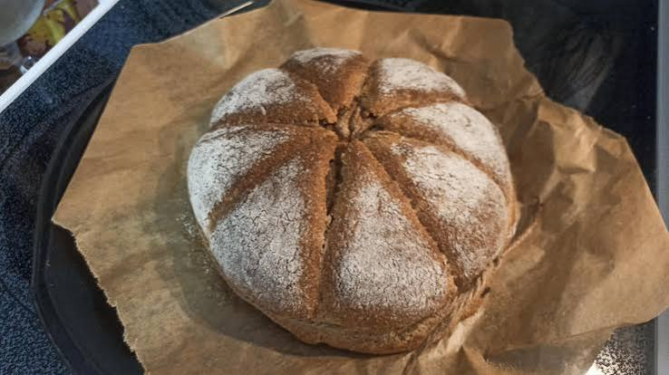

 Pão Sacro Romano Ingredientes: 250 g de queijo ricota (ou queijo feta levemente dessalgado) 1 xícara de farinha de trigo (ou farinha de espelta) 1 ovo batido Folhas de louro frescas 2 colheres de sopa de mel (para finalizar)